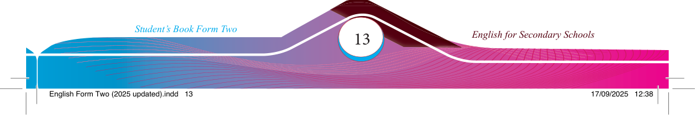

| Type of sentence | Type of intonation | Prompt |
|---|---|---|
| Statement | Falling intonation Describe something you did yesterday. |
| Statement | Question | Command | Exclamation |
|---|---|---|---|
| 1 | |||
| 2 | |||
| 3 | |||
| 4 | |||
| 5 | |||
| 6 |


(d) Use the table below to construct two sentences for each type of intonation.
Then, practise saying them aloud with the correct intonation. Write each sentence next to its corresponding prompt.
Question
Rising intonation
Ask about your friend’s plans for the weekend.
Command
Falling intonation
Give a polite command to a classmate.
Wh-question
Falling intonation
Ask for directions to the nearest library.
Exclamation
Rise-fall intonation
Express surprise about a recent event.
Statement
Fall-rise intonation
Express uncertainty and politeness.
(e) Use online sources to fi nd examples of sentences with different types of intonation. Write them in the table below. Then, read the sentences aloud and underline the words/phrases carrying rising, falling, rise-fall or fall-rise intonation.
Types of sentences